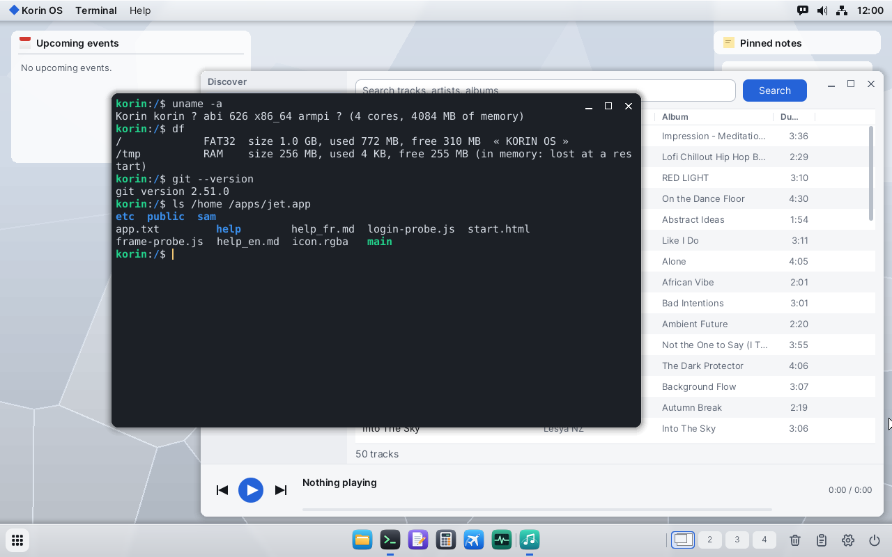
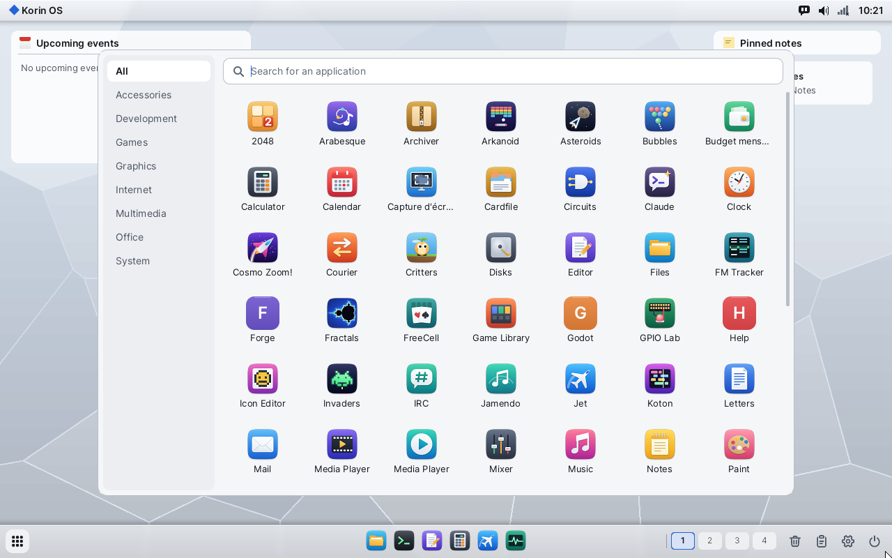

A desktop operating system, written from scratch.
Korin OS runs on x86-64 PCs and on the Raspberry Pi 4. It has a microkernel, its own desktop called Elegant, a POSIX layer for porting software, GCC inside the system, user accounts and signed packages.

One system, two kinds of machine
Korin started on the Raspberry Pi 4 in AArch64 assembly. Since November 2026 it also runs on x86-64 PCs, and most of the system has been rewritten in C so the two machines share the same kits, services, commands and desktop.
x86-64 with UEFI
Developed on an HP ZBook Fury 17 G8: NVMe, USB, Wi-Fi (Intel AX201), HD audio, Intel graphics through Mesa, touchpad and battery. It installs from a USB key.
Raspberry Pi 4
The original target: USB, Ethernet, Wi-Fi, sound, the V3D GPU through Mesa, the 40-pin header. Runs from a microSD card.
Same apps on both
Apps, kits and services are written once in C or C++. Only what depends on the machine stays apart.
What makes it Korin
Korin is not Linux and not a BSD. Every layer is its own, from the boot loader to the desktop, with well-known open-source projects ported on top.
A real microkernel
Drivers, file systems, the network stack and the window server run as separate processes. A crashing driver is restarted, not the system.
Elegant, its own desktop
A compositing window server with a panel, an app launcher, four workspaces, desktop widgets and two themes, Givre and Onyx Noir.
Kits for apps
Shared libraries such as UIKit, NetKit, AudioKit, MediaKit and GlKit give every app the same widgets, theme, network and media.
POSIX where it helps
newlib plus Korin's own libposix: enough to port bash, git, CPython, WebKit, Godot, .NET and many libraries.
Build inside the OS
GCC 14.2 runs in Korin, along with FASM, FreeBASIC, the .NET SDK, Python, git and bash.
Accounts and signed packages
A login screen, sudo, per-user home
folders, and a package manager that checks the signature of every repository index.
Software you can actually use
Over a hundred packages: a WebKit browser, an office suite, mail, music, games, emulators, a CAD program, the Godot engine and developer tools.
- Jet, a WebKit browser with WebGL
- Letters, Sheet, Slides: DOCX, XLSX, PPTX and OpenDocument
- Jamendo and Spotify clients, a media player, a music tracker
- Forge, parametric CAD on Open CASCADE
- Godot 4.7, .NET 10 with Avalonia, Python 3.14

Where to go next
Features
The desktop, accounts, software and the apps.
Developers
Languages, kits, the POSIX layer and packages.
Technical
Kernel, services, drivers and file systems.
Download
The PC install key and the Raspberry Pi images.
Korin OS is a personal project. On PC it is developed and tested on a single laptop, so other machines may lack drivers. Status labels on these pages say what was checked on real hardware and what only under the QEMU emulator.